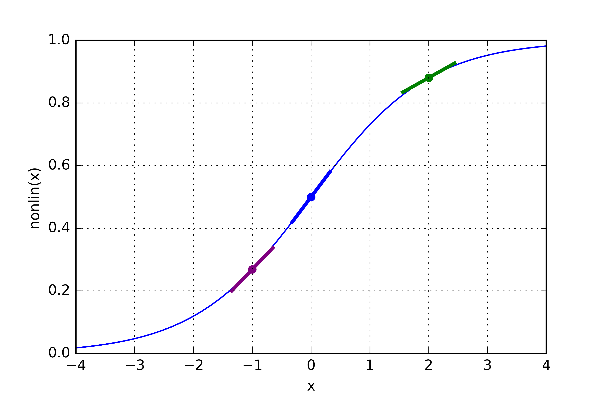

Python Példák¶
Két Rétegű Neurális Hálózat¶
A neurális háló tanítása backpropagation-nel történik.
A háló megpróbálja megjósolni adott bementre a kimenetet.
{kind=link}
Próbáljuk meg megjósolni az első három oszlopban lévő bemenetre a kimenet. Megoldhatjuk a problémát, hogy ha megmérjük a statisztikákat a különböző bementekre és kimenetekre.
Amint látjuk a bal szélső oszlop bemenete tökéletesen korrelál a kimenetre. Backpropagation, ebben az esetben, ezeket a statisztikákat méri, majd ebből állít fel egy modellt.
Nézzük meg hogyan is működik ez valójában
{kind=link}
| X | Bemeneti mátrix |
| y | Kimeneti mátrix |
| l0 | A hálózat első rétege, bemeneti adattal specifikált |
| l1 | A hálózat második rétege, más néven rejtett réteg |
| syn0 | Az első réteg súlyai, l0 és l1 réteget kapcsolja össze |
| * | Elemenkénti szorzás |
| - | Elemenkénti kivonás |
| x.dot(y) | Ha x és y mátrix, akkor mátrix-mátrix szorzás. |
1. sor: A numpy egy lineáris algebra könyvtár
4. sor: A sigmoid függvény bármely értéket egy 0 és 1 közötti értékre térképez fel.

10. sor: Három bemeneti csomópont van a hálózathoz és 4 képzési példa.
16. sor: Ez létrehozza a kimeneti adatkészletünket. A „.T” transzponálja a vektort.
20. sor: Jó ha a véletlen számok használunk súlyoknak.
23. sor: Ez a neurális hálózatunk súlymátrixa.
26. sor: Ez megkezdi a tényleges hálózati tanulást.
29. sor: Ez a mi előrejelzési lépésünk.
32. sor: Az l1_error csak pozitív és negatív számok vektora, ami tükrözi, hogy a hálózat mennyire hibás.
36. sor: Ha l1 ezt a három pontot ábrázolja. Minden derivált 0 és 1 között van. Figyeljük meg, hogy a nagyon magas értékek, mint az x = 2.0 (zöld pont) és a nagyon alacsony értékek, például az x = -1.0 (lila pont), meglehetősen sekélyek. A legmagasabb meredekség x = 0 (kék pont). Ez fontos szerepet játszik.
Több „matematikailag precíz” módszer létezik, mint a „hiba súlyozott származtatott”. Az l1_error egy (4,1) mátrix, a nonlin (l1, True) egy (4,1) mátrixot ad vissza. Majd elemenként összeszorozzuk őket. Ez visszaad egy (4,1) mátrixot: l1_delta.
Amikor mi összeszorozzuk „lejtőket” a hibákkal, akkor ezzel csökkentjük a hibát. Ha a lejtés sekély volt (közel 0-ra), akkor a hálózatnak nagyon magas vagy alacsony értéke volt.
39. sor: A hálózat frissítése.
{kind=link}
{kind=link}